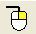

Last updated: February 7, 2007
 VOLVE 4.0
VOLVE 4.0
Toolbar Buttons
Toolbar

 - brings up the new simulation wizard.
- brings up the new simulation wizard.
 - open an existing simulation.
- open an existing simulation.
 - save current simulation.
- save current simulation.
 - cut selected organism (removes it from the current
simulation).
- cut selected organism (removes it from the current
simulation).
 - copy the selected organism to the clip board.
- copy the selected organism to the clip board.
 - paste the organism from the clip board into the current simulation.
- paste the organism from the clip board into the current simulation.
 - start the simulator (simulates a large number of steps and then
updates the display).
- start the simulator (simulates a large number of steps and then
updates the display).
 - start the simulator, but update the display after every step. Use this
button to watch the organisms interact.
- start the simulator, but update the display after every step. Use this
button to watch the organisms interact.
 - Simulate the universe 1 step.
- Simulate the universe 1 step.
 - stop the simulation.
- stop the simulation.
 - Zoom in. First drag a rectangle using the left mouse, then click
this button to zoom into the region.
- Zoom in. First drag a rectangle using the left mouse, then click
this button to zoom into the region.
 - Zoom out.
- Zoom out.
 - View all. Zoom all the way out and display entire universe.
- View all. Zoom all the way out and display entire universe.
 - Examine an organism. After selecting an organism, press this button
to examine the inner details of the organism. (View Organism).
- Examine an organism. After selecting an organism, press this button
to examine the inner details of the organism. (View Organism).
 - Launch the 3D Explorer program. The
current simulation will be viewable using a 3D first person perspective.
- Launch the 3D Explorer program. The
current simulation will be viewable using a 3D first person perspective.
-  - Right Click Tool. Configure the behavior of the right mouse button.
See the section right click tools.